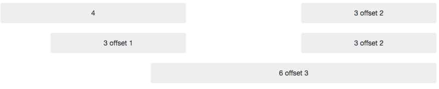

Bootstrap Grid
Basic html
Typography and links
Bootstrap sets basic global display, typography, and link styles. Specifically, we:
- Remove margin on the body
- Set background-color: white; on the body
- Reset via Normalize
Default grid system
The default Bootstrap grid system utilizes 12 columns, making for a 940px wide container without responsive features enabled. With the responsive CSS file added, the grid adapts to be 724px and 1170px wide depending on your viewport. Below 767px viewports, the columns become fluid and stack vertically.
Basic grid HTML
Given this example, we have .span4 and .span8, making for 12 total columns and a complete row.
Offsetting columns
Nesting columns
To nest your content with the default grid, add a new .row and set of .span* columns within an existing .span* column. Nested rows should include a set of columns that add up to the number of columns of its parent.
Fluid grid system
The fluid grid system uses percents instead of pixels for column widths. It has the same responsive capabilities as our fixed grid system, ensuring proper proportions for key screen resolutions and devices.
Basic fluid grid HTML
Make any row "fluid" by changing .row to .row-fluid. The column classes stay the exact same, making it easy to flip between fixed and fluid grids.
Fluid offsetting
Operates the same way as the fixed grid system offsetting: add .offset* to any column to offset by that many columns.
Fluid nesting
Fluid grids utilize nesting differently: each nested level of columns should add up to 12 columns. This is because the fluid grid uses percentages, not pixels, for setting widths.
Fixed layout
Provides a common fixed-width (and optionally responsive) layout with only class="container" required.
Fluid layout
Create a fluid, two-column page with class="container-fluid" —great for applications and docs.
Enabling responsive features
Turn on responsive CSS in your project by including the proper meta tag and additional stylesheet within the head of your document. If you've compiled Bootstrap from the Customize page, you need only include the meta tag.
Bootstrap doesn't include responsive features by default at this time as not everything needs to be responsive. Instead of encouraging developers to remove this feature, we figure it best to enable it as needed.
About responsive Bootstrap
Media queries allow for custom CSS based on a number of conditions—ratios, widths, display type, etc—but usually focuses around min-width and max-width.
- Modify the width of column in our grid
- Stack elements instead of float wherever necessary
- Resize headings and text to be more appropriate for devices
Use media queries responsibly and only as a start to your mobile audiences. For larger projects, do consider dedicated code bases and not layers of media queries.
Supported devices
Bootstrap supports a handful of media queries in a single file to help make your projects more appropriate on different devices and screen resolutions. Here's what's included:
Responsive utility classes
For faster mobile-friendly development, use these utility classes for showing and hiding content by device. Below is a table of the available classes and their effect on a given media query layout (labeled by device).
Grid options
See how aspects of the Bootstrap grid system work across multiple devices with a handy table.

Column ordering
Easily change the order of our built-in grid columns with .col-md-push-* and .col-md-pull-* modifier classes.